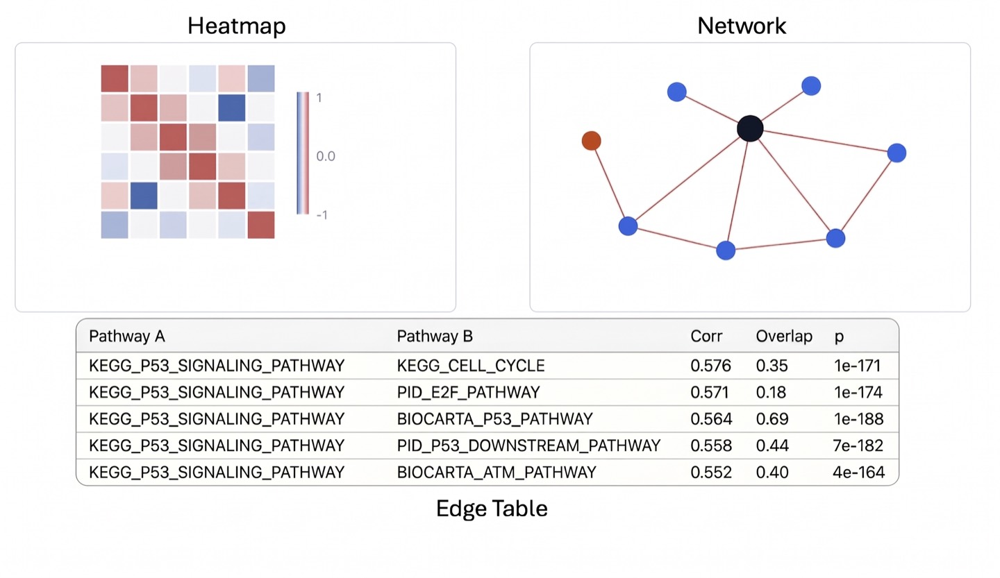

Which pathways correlate with the one you are studying?
PCxN measures how pathways rise and fall together across thousands of public expression experiments — including pathways that share no genes at all.
Pick a tissue and a pathway collection, add one or more pathways, then build the network. You'll get the neighbourhood three ways: a network, an edge table, and a heatmap.
Examples: , , , , ,
Starting from a gene list instead?

Network
Red edges are positive correlation, blue negative.
Pathways in this graph
Uncheck a row to take that node out of the graph. Check it again to put it back. Linked Pathways opens the partners it connects to in this view, with correlation and p-value. Search below to add another catalog pathway.
| In graph | Pathway | Role | Edges | Genes | Linked Pathways |
|---|
Heatmap
Edges
Copy pathways lists every pathway in the current edge table. Copy genes lists the unique gene symbols from those pathways.
| Pathway A | Pathway B | Correlation | p-value | FDR |
|---|